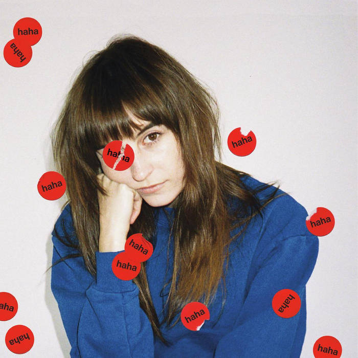
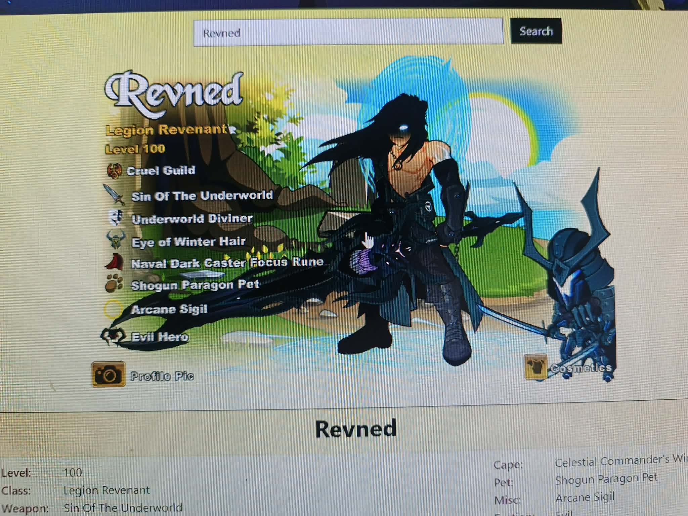
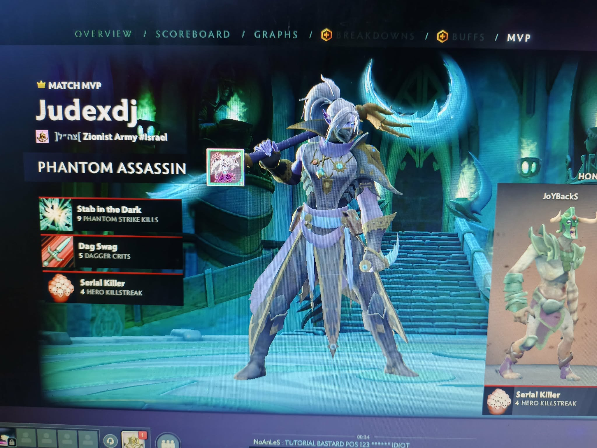
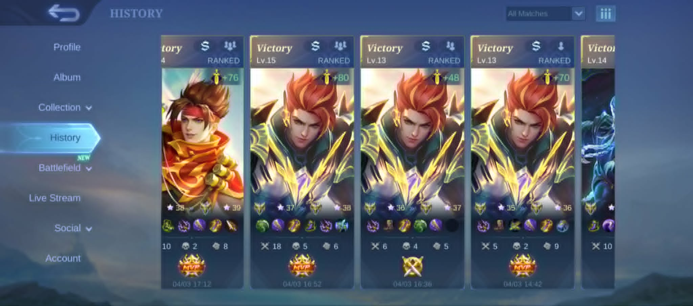
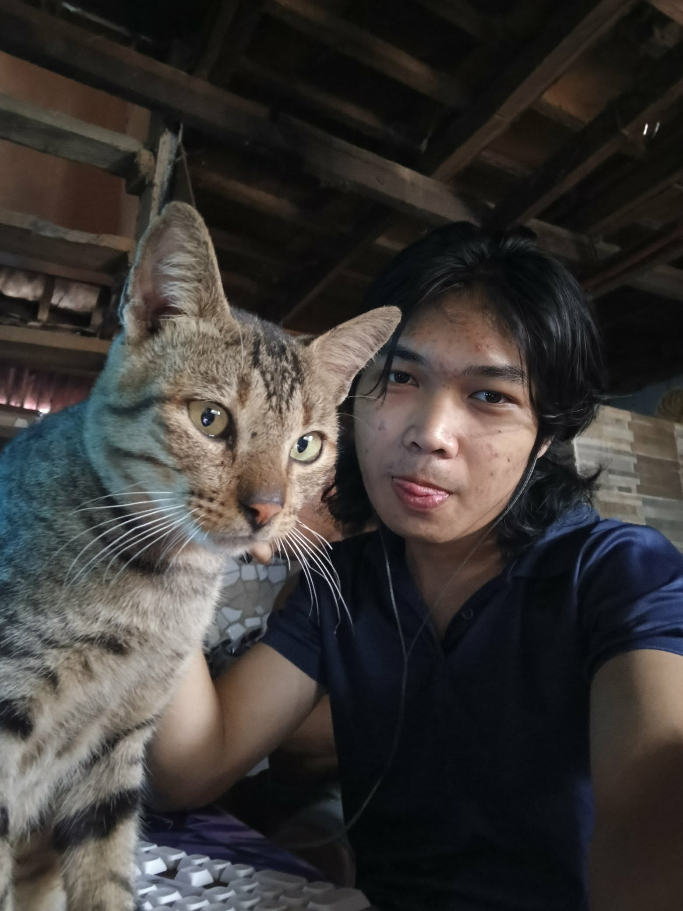
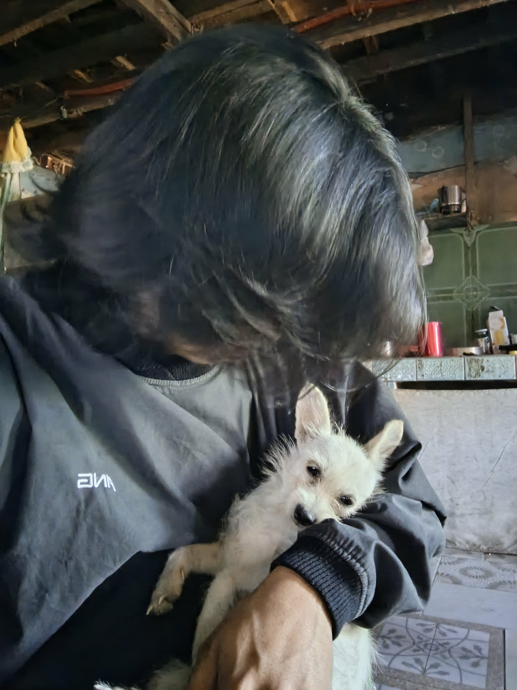
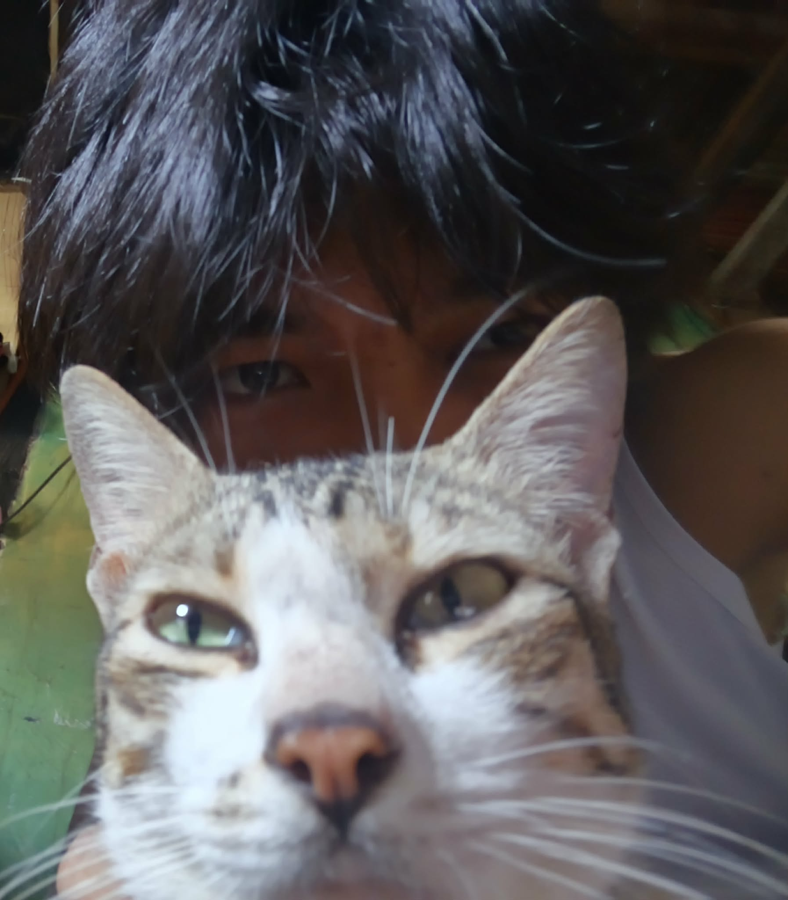

About Me
Hi there! I'm Denver Jude Zaulda, a 20-year-old from Cebu City with a passion for all things tech. You could say I'm "chronically online," but it's more than just a hobby – being a tech enthusiast is a fundamental part of who I am, like a missing piece that completes my identity. When I'm not diving deep into the digital world, you can find me gaming, getting lost in movies or anime, dancing, taking care of my cats, or simply enjoying some music. I'm always on the lookout for new knowledge and experiences to help me grow. My dream is to build something bigger than myself someday, and I'm dedicated to acquiring the skills and insights needed to make that happen.
🎧 Favorite Music Artists


🎮 Favorite Games



Pets


